“בית משיח” מפרסם לראשונה את ההוראות וההדרכות, מאחורי הדפסת מכתבי הרבי מלך המשיח בסדרת ה”אגרות קודש”
“בית משיח” מפרסם לראשונה את ההוראות וההדרכות, מאחורי הדפסת מכתבי הרבי מלך המשיח בסדרת ה”אגרות קודש”
“בית משיח” מפרסם לראשונה את ההוראות וההדרכות, מאחורי הדפסת מכתבי הרבי מלך המשיח בסדרת ה”אגרות קודש”
• • •
מתי הורה הרבי להתחיל להדפיס את הכרך הראשון
בסדרת ה”אגרות קודש” ומה היו הוראותיו של הרבי מלך המשיח
לעוסקים בעבודת העריכה? מה הקשר בין ה’דידן נצח’ במשפט הספרים להדפסת האגרות קודש? • דרך כתבי-יד קודש שחלקם נחשפים כאן לראשונה, נפתח בפנינו צוהר מרתק של הוראות הרבי וההנחיות הקפדניות להשמיט מכתבים או חלקי מכתבים שעלולים לפגוע בפרטיותם של הנמענים שפנו לבקש את ברכתו, עצתו והדרכתו • סקירה מרתקת מתוך אלבום על הוצאת ספרים “קה”ת”, שייצא לאור אי”ה בקרוב • תודתנו נתונה להנהלת קה”ת על פירסום הפרק בשבועוננו
• • •
“אגרות קודש” אינה רק סדרת ספרים שמאגדת בתוכה כעשר אלף מכתבים מאת הרבי מלך המשיח. בימים אלה של העלם והסתר, כאשר איננו יכולים לקבל מכתבים ישירים מהרבי – הפכה הסדרה לערוץ של קשר נפשי טמיר ומיוחד בין הרבי לחסידים, הרבה מעבר לאוצר בלום של הוראות ומכתבים.
לא רק חסידי חב”ד, אלא מאות אלפים מכל רחבי תבל נוהגים כיום לבקש את ברכתו ועצתו של הרבי מלך המשיח שליט”א, ולהניח את מכתבם האישי בין כרכי ה”אגרות קודש”. בדרך פלא דואג הרבי להשיב לפונים אליו, באמצעות אחד מאלפי האיגרות העוסקות בשלל רחב ומקיף של נושאים בכל שטחי החיים ועסקנות הכלל. האיגרת שנדפסה בעמוד בו הונח מכתבם, מהווה עבורם מענה ברור ומעודד לדילמה שזה עתה העלו על הכתב. רטט ורעדה פנימית נוגעת בלב ליבו של כל חסיד, בקוראו את האיגרת שכתב הרבי לפני ארבעים או חמישים שנה – וכביכול נכתבה באופן מיוחד למצבו הנוכחי.
בפרק זה נתמקד בעריכה וההוצאה לאור של כרכי “אגרות קודש”, המאגדים אלפי אגרות שנכתבו על-ידי הרבי מלך המשיח, עד שנת תשל”ה. דרך כתבי-יד קודש, שחלקם נחשפים כאן לראשונה, נפתח בפנינו צוהר מרתק של הוראות הרבי בנוגע לעבודת העריכה של הסדרה, ובפרטיות יותר על ההנחיות הקפדניות ודאגתו האישית של הרבי להשמיט מכתבים או חלקי מכתבים שעלולים לפגוע בפרטיותם של הנמענים שפנו לרבי לבקש את ברכתו, עצתו והדרכתו.
• • •
אגרותיו של הרבי – בהוספות ללקוטי שיחות
הורתה ולידתה של סדרת ה”אגרות קודש” הכללית, של כל רבותינו נשיאינו, הייתה באתערותא דלעילא, בהוראה שקיבל הרב שלום דובער לוין, הספרן בספריית ליובאוויטש, בפתק שכתב לו הרבי בשלהי טבת תש”מ, ובו הוראות לאסוף את אגרות אדמו”ר הזקן ולהוציאם לדפוס. במשך השנים הבאות זכה הרב לוין לעשרות הוראות ומענות קודש בנוגע לעריכת סדרת האגרות של רבותינו נשיאינו, עד שבחודש טבת תשמ”ז הושלמה הסדרה, כולל כמה כרכי מילואים.
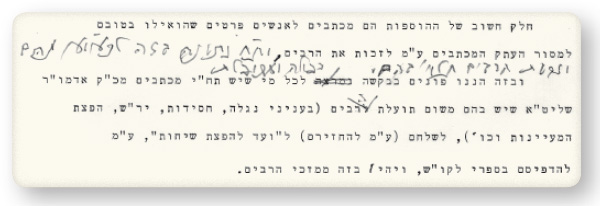
לאחר שסיים את הדפסת הסדרה, לא עלה בדעתו של הרב לוין להציע להדפיס גם את אגרותיו של הרבי בסדרת “אגרות הקודש”, מכיוון שמאז שנת תשכ”ב – כאשר נדפס חלק ב’ של לקוטי שיחות – נדפסו אגרות תוכניות של הרבי ב”הוספות” לכרכי הלקוטי שיחות.
את המכתבים שנדפסו בהוספות ללקוטי שיחות, קיבלו חברי הוועד להפצת שיחות מחסידים שהיה ברשותם אוסף מכתבי-קודש, או מהנמענים עצמם שהעבירו לפירסום את המכתבים שקיבלו מהרבי. היו אף פעמים בודדות שהרבי עצמו העביר העתק ממכתביו, בכדי לפרסמם בלקוטי שיחות השבועי.
לפני הדפסת כל כרך של לקוטי שיחות, כאשר הכניסו את הספר המוכן לאישורו הסופי אצל הרבי – עבר הרבי גם על המכתבים שבהוספות, ופעמים נדירות אף הוסיף ותיקן במכתבים אלו.
כאשר יצאו לאור כרכים י”ב-י”ג של לקוטי שיחות, שהיו ספרים דלי-עמודים לפי ערך, הביע הרבי את פליאתו על כך, ולאחר שחברי הוועד אמרו שאין להם מספיק מכתבים עבור ה”הוספות”, הורה הרבי לחברי המזכירות להעביר להם כמה מאגרותיו, על מנת להדפיסם בסדרת הלקוטי-שיחות.
על החביבות המיוחדת שייחס הרבי להדפסת מכתביו בהוספות ללקוטי שיחות, ניתן ללמוד מהגהותיו של הרבי על הפתח-דבר לכרך ט”ו, בו פנו חברי הוועד בבקשה מיוחדת לציבור, בזה הלשון:
“חלק חשוב של ההוספות הם מכתבים לאנשים פרטיים שהואילו בטובם למסור העתק המכתבים על מנת לזכות את הרבים, ובזה הננו פונים בקשה נמרצה לכל מי שיש תחת ידו מכתבים מכ”ק אדמו”ר שליט”א שיש בהם משום תועלת הרבים (בעניני נגלה, חסידות, יראת-שמים, הפצת המעיינות וכו’), לשלחם (על מנת להחזירם) ל”וועד להפצת שיחות”, על מנת להדפיסם בספרי לקוטי שיחות, ויהיו בזה ממזכי הרבים”.
על כך הוסיף הרבי בכתב-יד-קודשו אחרי המילים “לזכות את הרבים”: ות”ח [ותשואות חן] נתונה בזה לכאו”א [לכל אחד ואחד] מהם וזכות הרבים תלוי’ בהם. ועל המילים “פונים בבקשה נמרצה”, תיקן הרבי והוסיף “כפולה ומכופלת” (ראה צילום).
בשנת תשמ”ג, כאשר הכינו לדפוס את כרך כ”ב של לקוטי-שיחות, כתבו חברי הועד לרבי:
“הננו באמצע שלבי הכנת כרך הבא ללקו”ש – חכ”ב על ספר ויקרא. לעת עתה אין מספיק עמודים לכרך שלם, ובפרט – בערך לכרכים הקודמים
. . המכתבים הנדפסים בלקו”ש אנו מקבלים מאנשים פרטיים כו’, ובדרך הלזו כבר קשה מאד לקבץ מספר נכון של מכתבים. כי כפי הנראה רובם ככולם של מכתבי אדמו”ר שליט”א התוכניים שעדיין לא נדפסו, נכתבו לאנשים שלא מאנ”ש כו’, ואין אנו יודעים מי ואיפה הם.
“לפי זכרוננו, שלפני כמה וכמה שנים (כשיצאו לאור כרכי לקו”ש חי”ב-חי”ג שהיו ספרים קטנים לפי ערך) היתה הוראה (?) שיותן המכתבים שבמזכירות שאפשר להדפיסם. והלא עתה כבר נתהווה מצב שקשה להו”ל כרך של לקו”ש בלי זה”.
ועל כך ענה הרבי בכתי”ק: ילקטו מהמזכ’ אלו (שבמזכירות) המתאימים ויתנו להו’ [להוציא לאור (?)] (ראה צילום).
“יברר אצל הררש”מ שי’ סימפסון” האחראי על ארכיון הרבי, הרב שלום מענדל סימפסון, מנהל המרכז לענייני חינוך וחבר המזכירותהתפנית: הרבי מורה להוציא את אגרותיו בסדרת “אגרות קודש”
לקראת הדפסת כרך כ”ה בלקוטי-שיחות, שוב נוצר מחסור במכתבים עבור ה”הוספות”. בהתאם להוראת הרבי האמורה, לפנות למזכירות – פנה הרב שניאור זלמן חנין, מנהל הוועד להפצת שיחות, אל מזכירו האישי של הרבי והאחראי על ארכיון האגרות של הרבי, הרב שלום מענדל סימפסון, וביקש ממנו שיעביר לחברי הוועד מכתבים תוכניים של הרבי.
לאחר שהרב סימפסון העביר את בקשתו של הרב חנין אל הרבי, ושאל מה עליו לעשות, אמר לו הרבי לבדוק אם יש בארכיון מכתבים עם תוכן מתאים לדפוס, ולהראות לו את המכתבים. הרב סימפסון בחר חבילת מכתבים משנת תשי”ח, והכניס לחדרו הקדוש של הרבי.
באתערותא דלעילא, הורה הרבי להעביר את חבילת המכתבים לידי הרב לוין, על מנת להוציא את מכתביו בסדרת “אגרות קודש” של רבותינו נשיאינו. וכך, ביום שלישי ט”ז אדר תשמ”ז, קיבל הרב לוין לידיו את חבילת המכתבים כשאליהם מצורפת פתקה בכתי”ק של הרבי (ראה צילום):
להררשד”ב שי’ לוין
כדאי לברר ובהקדם האפשרי
1) מה כדאי להו”ל מהמצו”ב [להוציא לאור מהמצורף בזה]
2) להגי’ עוד והעיקר להוסיף מ”מ [מראי מקומות] וכו’
3) להו”ל בפו”מ [להוציא לאור בפועל ממש].
מכיוון שכאמור, עד אז יצאו אגרותיו של הרבי במסגרת ההוספות ללקוטי שיחות, ובאחריות חברי הוועד להפצת שיחות, לא הבין הרב לוין מה הקשר שלו לעניין, ופנה לחברי הוועד לברר מה ידוע להם על חבילת המכתבים. לאחר ששמע מהם את מהלך העניינים, ובהתאם להוראת הרבי “להוציא לאור בפועל ממש” – פנה הרב לוין אל הרבי ושאל באיזה משני האופנים להוציא לאור: בסדרת כרכים מיוחדת של “אגרות קודש”, או בתור הוספות לסדרת ה”לקוטי שיחות” – כפי שהיה עד כה.
הרבי מחק את האפשרות השנייה, הדגיש את האפשרות הראשונה (להוציא כחלק מסדרת הספרים “אגרות קודש”), והוסיף: יברר אצל הררש”מ שי’ סימפסון שהוא המציא חבילה זו ואצלו עוד כו”כ [כמה וכמה].
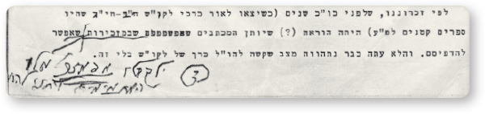
הוראתו של הרבי להדפיס את מכתביו בסדרת ה”אגרות קודש” של רבותינו נשיאנו שלפניו, התקבלה בהתרגשות רבה בקרב החסידים. המשפיע הרב נחמן שפירא, חבר הוועד להפצת שיחות, מספר כי זקני החסידים העלו אז סברה, שהוראתו של הרבי מגיעה על רקע הניצחון במשפט הספרים, שעיקרו היה ערעור על נשיא דור השביעי!
הרב שלום דובער לוין, ספרן ספריית אגודת חסידי חב”דסימוכין לדברים מצאו זקני החסידים בעובדה שסמוך להתחלת המשפט, בכסלו תשמ”ו, הורה הרבי, כמה וכמה פעמים, להדפיס את כל מאמרי רבותינו נשיאינו שטרם הודפסו, וכן הורה להדפיס אלבומים מפעילות השלוחים במבצע חנוכה. הרבי הסביר אז, שהדפסות אלו נועדו לדחות את טענותיו של הצד שכנגד, שליובאוויטש אינה פעילה ר”ל.
ובחודש אדר תשמ”ז, כאשר הצד שכנגד הכין ערעור על פסק הדין – הורה הרבי בפתאומיות להוציא את אגרותיו בתוך סדרת ה”אגרות קודש” של רבותינו נשיאינו!
כדי להבין עד כמה מיוחדת הייתה אותה הוראה באתערותא דלעילא, חשוב לציין שרוב שיחותיו ומאמריו של הרבי שנדפסו עד אז – הן המוגהים והן הבלתי-מוגהים – קיבלו את אישורו של הרבי רק לאחר בקשות והשתדלויות רבות של החסידים. ואילו כאן, לראשונה, מורה הרבי בעצמו להדפיס את כל אגרותיו במסגרת “אגרות קודש”. היה ברור שזה קשור עם דברי הרבי אודות “תקופה חדשה” – הכנה לבנין בית המקדש השלישי, הכוללת גם שלב חדש בהפצת המעיינות – כולל ובמיוחד של הרבי מלך המשיח בעצמו, בבחינת המלך מבזבז את כל אוצרותיו לניצחון מלחמת בית דוד.
הרב סימפסון: המכתבים מהשנים הראשונות – בחדרו של הרבי
באותם ימים נקרא הרב סימפסון אל הקודש פנימה, והרבי הורה לו להדפיס את כל המכתבים, כולל המכתבים מהתקופה שלפני קבלת הנשיאות. כמו כן מסר לו הרבי כללים איזה מכתבים להדפיס. בין השאר אמר לו הרבי שלא להדפיס מכתבים שיש בהם פגיעה בחוגים אחרים או עסקנים. הרבי גם הורה לו שלפני שיעביר את המכתבים להדפסה – יכניס את המכתבים אל הקודש פנימה, לאישורו של הרבי.
בהמשך, פנה הרב לוין אל הרב שלום מענדל סימפסון, וביקשו לחפש בארכיון את אגרותיו של הרבי מהשנים הראשונות, כדי שיוכל לסדר את אגרותיו של הרבי בדומה לסדרת ה’אגרות קודש’ מאת רבותינו נשיאינו – שסודרו לפי סדר כרונולוגי.
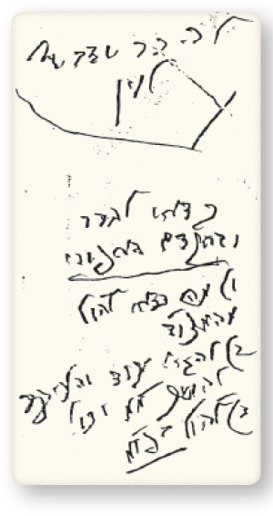
בא אלי הרב שד”ב לוין והראה לי מענה כ”ק אד”ש בנוגע למכתבים.
ישנם איזה שאלות באופן העברת המכתבים אליו:
א) נמצאים אצלי המכתבים רק משנת תשי”א ואילך – אבל מקודם לכן אינם נמצאים אצלי וכמדומני (בשעה שעבדתי בשנת תש”י בקשר להפיילס [מסמכים]) עבדתי בחדר כ”ק אד”ש, ולפי זה – כמדומני שנמצאים המכתבים משנת תש”י ולפני זה – בחדר כ”ק אד”ש. ובאם אפשר להשיגם שם?
ב) להיות שמענת כ”ק אד”ש בתחילה היתה “להראני” המכתבים, על כן שאלתי אם להעביר המכתבים בתוכן ישר להרב שד”ב לוין שי’ או בתחלה להראותם לכ”ק אד”ש.
ג) אם להוציא רק מכתבים בתוכן (כאלו שנמסרו כבר לכ”ק אד”ש) – או גם מכתבים פרטיים ואחר כך עליו להחליט איזה מהם להדפיס וכו’
בנוגע לשאלה אם להעביר את תוכן המכתבים ישירות לידי הרב לוין או להראותם לרבי קודם לכן, הקיף הרבי בעיגול את המילים: “בתחלה להראותם לכ”ק אד”ש”. וכך גם בדבר בקשת הרב לוין למסור לידיו גם מכתבים פרטיים שכתבו אנשים לרבי. השיב הרבי: כנ”ל ב. היינו, להוציא גם מכתבים פרטיים מהארכיון, אך להעבירם תחילה אל הרבי, שהוא יחליט מה מתאים להדפסה.
כפי השערתו של הרב סימפסון, המכתבים שלפני תש”י אכן היו בחדרו של הרבי. הרבי עבר על המכתבים, והעביר את הראוי להדפסה לעריכתו של הרב לוין.
הרבי רומז: הספר צריך להיות מוכן לי”א ניסן
לאחר שקיבל לידיו את המכתבים, שאל הרב לוין את הרבי האם לערוך אותם בסדר כרונולוגי, כמו כל הסדרה, או לחלקם לפי עניינים. תשובתו של הרבי הייתה: קדימה לאופן – שתוקדם יותר ההו”ל [ההוצאה לאור]. מכיוון שקל יותר לערוך את הסדרה בסדר כרונולוגי, כתב הרב לוין שכך עדיף, והרבי ענה: וה”ז [והרי זה] שייך להכנות לפסח – חפזון וכו’.
מתשובותיו של הרבי הבין הרב לוין שהרבי מעוניין שהספר יהיה מוכן לקראת יום הולדתו בי”א ניסן. הוא השקיע את כל מרצו בהכנת הספר יחד עם צוות עוזרים, וכעבור תשעה ימים בלבד, ביום חמישי כ”ה אדר, הצליח להפיק עלי הגהה ראשונים מתוך הספר, בו קיבץ את המכתבים עד שנת תש”ד.
הרב לוין העביר את עלי ההגהה לרבי, תוך שהוא מציין שהכין ספר קטן כדי שיוכל להספיק להדפיסו בהקדם. עוד כתב הרב לוין באותו הפתק, שבאם יצרף לספר גם אגרות משנת תש”ה, לא יספיקו להדפיסו ולכרכו לפני י”א ניסן. והרבי השיב: א”כ [אם כן] לא כדאי.
באותו פתק הוסיף הרב לוין ושאל אם ימסרו לו אגרות נוספות מתקופה זו, והרבי השיב: יברר במז’ [במזכירות]. כבר למחרת קיבל מהמזכירות חבילת אגרות נוספות – שנכתבו לאורך השנים תרפ”ט-תש”ד.
במבוא לספר, סקר הרב לוין את התכתבויות הרבי בתקופה ההיא, ובין השאר כתב: בשעה שאביו היה מרבה לכתוב לו ביאורים בקבלה, היה כ”ק אדמו”ר שליט”א משיב לו בין בענייני קבלה ובין בתורת הנגלה”. הרבי מחק את זה ותיקן: ואביו היה מרבה לכתוב לו ביאורים בקבלה.
מכיוון שבכרכי הלקוטי-שיחות נדפסו גם מפתחות לפסוקים ומאמרי חז”ל, חשב הרב לוין שאולי כדאי שגם בכרכי האגרות של הרבי יהיה מפתח כזה. אלא שעריכת מפתח כזה דורשת זמן רב, והספר לא יהיה מוכן לי”א ניסן. מכיוון שכך, שאל את הרבי האם להסתפק רק במפתח עניינים, כדי שיוכלו להדפיס את הספר לפני י”א ניסן. במענה, הדגיש הרבי את המילים “לערוך רק מפתח ענינים וכו’”.
בשילוב של עבודה מאומצת וזריזות, הצליח הרב לוין למלא את רצונו הק’ של הרבי, ולרגל יום הולדתו של הרבי י”א ניסן תשמ”ז, ראה אור עולם הכרך הראשון בסדרת “אגרות קודש מאת כ”ק אדמו”ר שליט”א”.
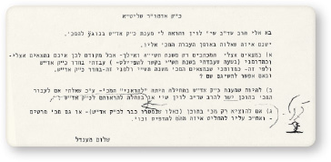
במהלך החודשים הבאים הוסיף הרבי לזרז את הרב לוין להוציא את הכרכים הבאים. לאחר חג הפסח שאל הרבי האם הכרך השני יכול להיות מוכן עד ל”ג בעומר. מכיוון שהרב לוין היה טרוד באותם ימים עם הערעור על משפט הספרים – כתב לרבי כי כדי להוציא את הכרך השני עד ל”ג בעומר יהיה צורך לצמצם את הכרך הזה לאגרות מהשנים תש”ה-תש”ז. וכמו כן, מפאת קוצר הזמן, יאלץ להסתפק בעזרתו לענייני המשפט רק בהמוכרח.
הרבי סימן את המילים “רק בהמוכרח”, והוסיף: אינו מספיק, כמובן. וידחה (אגרות קודש) וכל עכבה לטובה (ויהי’ כרך גדול).
בכרך השלישי נדפסו האגרות שנדפסו במשך השנים תש”ט-תש”י. אחרי הסתלקות הרבי הריי”צ, היו כמה מכתבים שנחתמו על ידי הרבי יחד עם חדב”נ הרש”ג ע”ה. במענה לשאלת הרב לוין אם לכלול את האגרות הללו בכרך הבא, השיב הרבי: בהוספה לכרכי אגה”ק דכ”ק מו”ח אדמו”ר.
לאחר שסיים את עריכת האגרות עד תש”י, שרובם התקבלו ישירות מהרבי, מחדרו הקדוש או מביתו, וכן מעט מכתבים שנמצאו באוספים פרטיים – פנה הרב לוין אל הרב שלום מענדל סימפסון, וביקשו להתחיל להעביר לו את המכתבים משנת תש”י ואילך.
מכיוון שבארכיון היו מונחים אגרותיו של הרבי לצד מכתבי השאלות ששוגרו אל הרבי – ביקש הרב סימפסון מהרבי להדריך אותו כיצד לנהוג במכתבים בעלי אופי אישי או לחילופין בענייני מחלוקת:
בנוגע לכמה מכתבים משנת תש”י ולהלן, ישנם כמה מהם שקשורים בענינים פרטים ביותר, או בעניני מחלוקת במוסדות או באנשים פרטים וכו’ ויש במכתבים הנ”ל גם עניני הוראה וכו’ נוסף על הענין הפרטי ומתוצאה מעניני פרטי. מוסג”ב [מוסיף גם בזה] חבילה קטנה ממכתבים מסוג זה.
והשאלה אם להכניס מכתבים אלו בכדי להדפיס, באפשר להסיר השמות או לא להכניסם כלל.
בראש העמוד כתב הרבי: נת’ ות”ח
ועל השאלה אם להכניס מכתבים “באפשר להסיר השמות”, משך הרבי קו על המילה ‘באפשר’ והוסיף בכתב-יד: ולהשמיט הענין שאינו מתאים.
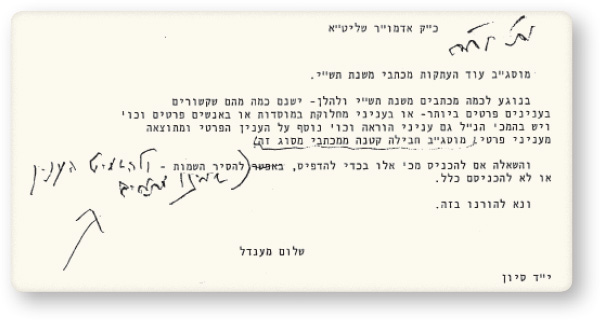
אחרי מיון קפדני, דלה הרב סימפסון את האגרות שאפשר להדפיסם, ולאחר-מכן צילם את המכתבים ומחק מהצילומים את הקטעים שאינם לפרסום, כמו קטעים בעלי אופי אישי או קטעים הקשורים לענייני מחלוקת. לעיתים מחק גם את שם מקבל המכתב.
הרב לוין, שקיבל את המכתבים המצונזרים – התקשה מאוד בעבודת העריכה, ומכיוון שביקש שהעריכה תהיה מושלמת, ולכל מכתב יהיה הסבר על איזה שאלה נסוב מענה הרבי, כתב על כך לרבי בראש חודש מנחם-אב:
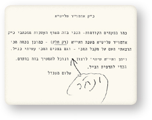
הכרך הרביעי יכלול, לפי התוכנית, את אגרות שנת תשי”א. אצלי מצוי חלק קטן מאגרות שנה זו. חלק הארי של אגרות שנה זו נמצא בארכיון. שאלתי אודותם ואמרו לי שכבר צילמו אותם מהארכיון, אך עדיין לא עברו עליהם כדי להשמיט השמות והקטעים הפרטיים, וזה יקח עוד משך זמן.
יש אם כן שתי אפשרויות: א) שאקבל את הצילומים כמו שהם ואתחיל לעבוד עליהם (כולל השמטת הקטעים הנ”ל). ב) שאמשיך לעבוד על ספרי התולדות וכיו”ב, עד שתוגמר עבודת מיון צילומי המכתבים.
בעקבות מכתבו של הרב לוין, הורה הרבי לרב שלום מענדל סימפסון להזדרז במיון המכתבים, ואף הורה לו לקחת אברך שיסייע לו בעבודת המיון. ואכן, כעבור כמה ימים העביר הרבי אל הרב לוין חבילת מכתבים נוספת, וכתב:
מצו”ב [מצורף בזאת] עוד.
ועל הקטע האחרון במכתבו של הרב לוין, השיב:
יתעסק ב(שתי אפשרויות).
הרב סימפסון מבקש הנחיות. הרבי: בהתאם לשולחן ערוך
כעבור שבועיים, שוב כתב הרב לוין מכתב ובו נימק את כל הקשיים בעבודת העריכה על חומר שמועבר אליו אחרי שהוא כבר מצונזר. “הריני רואה חובה לעצמי להודיע, שלעניות-דעתי, הסדר החדש שנקבע להכנת המכתבים לעריכת האגרות קודש, בהכרח ישפיע על טיב אפשרות העריכה, למרות המאמצים שלי”.
והרבי השיב: בכהנ”ל יתדבר עם הררש”מ שי’ סימפסון.
בי”ז מנחם-אב, הכניס הרב סימפסון את חבילת המכתבים האחרונה משנת תשי”א להגהת הרבי, ועל זה השיב הרבי:
נת’ ות”ח,
יש הערות מהרשד”ב שי’ לוין ובקשתיו – שיתדברו ביניהם
בהתאם למענה הרבי לשניהם, נועדו הרב סימפסון והרב לוין לשיחה בקשר לארכיון המכתבים. הרב לוין טען שלא יוכל לערוך את האגרות באופן שערך הכרכים הקודמים, מבלי שתינתן לו גישה חופשית לבדוק בארכיון עצמו, ואילו הרב סימפסון טען שמדובר בחומר מסווג מאוד, עם אופי פרטי, וללא אישור מפורש מהרבי – אינו יכול למסור את המכתבים המקוריים, ובוודאי שלא את מכתבי השאלות שאנשים שיגרו אל הרבי.
לאחר שהשיחה ביניהם הסתיימה ללא הסכמות, כתב הרב סימפסון לרבי את תוכן השיחה, וביקש שהרבי יורה לו כיצד להעביר את המכתבים לעריכה:
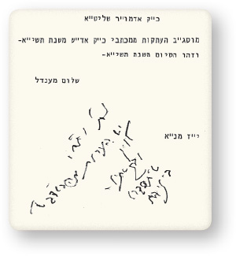
אבל להיות שמקבל אני בקשות מרשד”ב שי’ לוין – ובהוספה המכ’ המוסג”ב – וכמובן שאני בעצמי כבר אמרתי שאין ברשותי ליתן לו מכתבים מהכותבים וכו’
ע”כ שאלתי לקבל הוראות כ”ק אד”ש בכלל בנתינת מכתבים מהכותבים כאלה שמבקש [הרב לוין] – ובפרט בענין מכתבים המצורף בזה שבוודאי יבקש עוד להבא – איך להתנהג בזה.
הרבי סימן את שמו של הרב לוין וכתב:
ככתבי מאז (ומובן מעצמו)
1. כדאי לסייעו וכו’ וכו’
2. ובמילא אם מותר ע”פ שו”ע [על פי שולחן ערוך] למלאות בקשתו.
הרב סימפסון הבין מתשובת הרבי, שעליו לעשות ככל יכולתו כדי לסייע לרב לוין בעבודתו, אולם רק במסגרת הדברים המותרים על פי שולחן ערוך. מכיוון שנפסק להלכה כחרם דרבנו גרשום שלא לקרוא מכתבי חבירו שלא מדעתו – הודיע הרב סימפסון לרב לוין כי עם כל הרצון הטוב לסייע לו בעבודת העריכה, הוא לא יוכל להעביר לו את מכתבים אישיים שאנשים שלחו לרבי.
הרב סימפסון עדכן על כך את הרבי, וכתב:
על-פי הוראת כ”ק אד”ש דברתי עם ר’ שלום דובער שי’ לוין – והסברתי לו שאי אפשר לי ליתן לו כל המכתבים ביחד עם המענות (ההעתקות) – ובפרט משנת תשי”א והלאה – ולהיות שעלי האחריות של הפייל [הארכיון], ומשנת תשי”א ישנם כמה וכמה ענינים פרטים שכתבו לכ”ק אד”ש ואין לי רשות ליתן הנ”ל.
הרבי הגיב: א”כ [אם כן] מה השאלה?!
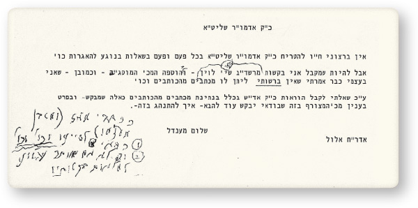
תשובתו של הרבי הייתה: אינו מובן כלל איך מותר ליתן (גישה חפשית) כשכותב המכתב (או כיו”ב) אסר זה?!
ועל מה שכתב הרב לוין “באופן שערכתי הכרכים הקודמים” השיב הרבי: א”כ יהי’ באופן אחר.
באם יתמעטו ההערות אי אפשר להו”ל המכ’? [להוציא לאור המכתבים].
הרב לוין הדפיס את הכרך הרביעי בסדרה עם צילומי המכתבים המצונזרים שקיבל מהרב סימפסון. אולם לקראת הכנת הכרך החמישי, כתב שוב לרבי:
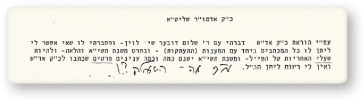
ואבקש ברכת כ”ק אדמו”ר שליט”א שאוכל לעמוד בכל הנ”ל ובהצלחה.
והרבי מה”מ השיב על הבשורה שבשורה הראשונה:
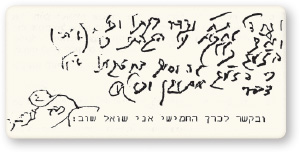
ועל המשך המכתב, בו מבקש לקבל לידיו את המכתבים ללא צנזור, השיב הרבי: כבר עניתי.
• • •
בצורה זאת נקבע אופי וסגנון העריכה בשאר הכרכים שיצאו לאור: המזכיר הרב שלום מענדל סימפסון ליקט שורת מכתבים מתוך הארכיון של הרבי, צילם את כולם, ולאחר שהשמיט מהצילומים את מה שאינו ראוי לפירסום – מסרם בחבילות להגהת ואישור הרבי.
הרבי העביר הלאה את חבילת המכתבים אל הרב לוין, וכאשר הספר היה מוכן לדפוס, היה מאשרו בנתינת תאריך ל”פתח דבר”, ובד בבד מזרז את ההוצאה לאור.
במהלך השנים השתתף בעריכת האגרות קודש גם הרה”ח ר’ שלום יעקב חזן, ובחורף תשנ”ד, לקראת הכנתו לדפוס של כרך כ”ב, העביר הרב לוין את האחריות על עריכת הסדרה לידי הרב חזן, ששידרג את העריכה, בהוספת מראי מקומות וציונים ומפתחות מפורטים יותר.
• • •
ראוי לסיים כתבה זו בדברים שכתב הרב לוין במבוא לאגרות קודש חלק י”ב, על הייחודיות של סדרת אגרות הקודש של הרבי, והעיתוי בו ניתנו על ידי הרבי לפירסום. באותן שנים הפסיק הרבי לקבל אנשים ליחידויות ומיעט במענות מפורטים. על רקע זה, אפשר לומר שבפרסום סדרת אגרות הקודש מאפשר הרבי לחסידים לקבל את דעתו בכל פרט בחייהם.
חשוב לציין כי מבוא זה נכתב בהתאם להוראת הרבי, והרבי אף אישר אותו בטרם הדפסתו. כך שלדברים שנכתבו שם יש משמעות רבה, עם חותם המלך.
וכך נכתב במבוא:
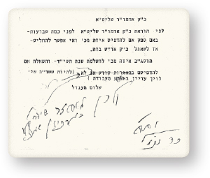
ומעין זה ניתן לומר, אולי, ביחס להופעת אגרות הקודש של כ״ק אדמו״ר שליט״א:
במשך עשרות שנים קיבל כ״ק אדמו״ר שליט״א אלפים ורבבות אנשים ל״יחידות״ והעניק להם עצות והדרכות בעבודת ה׳, בעסקנות הכלל, בבעיות הפרט וכו’.
בד בבד עם ה״יחידות״ — לאלו המסתופפים בצל קדושתו, השקיע כ״ק אדמו״ר שליט״א עבודה רבה בכתיבת אגרות לכל קצוי תבל. וכמו ה״יחידויות״ אף הן מקיפות את כל שטחי החיים והמעיין באגרות הקודש ימצא בהן שפע של הוראות והדרכות בהלכה ומנהג, בעבודת ה׳, בעסקנות הכלל, בחיי הפרט וכו’.
בשנים האחרונות כאשר מספר החסידים הולך וגדל, כ״י, נפסקה, כידוע קבלת אנשים ליחידות פרטית וגם כתיבת האגרות המפורטות איננה כבשנים שעברו, וכ״ק אדמו״ר שליט״א דיבר לא אחת בשיחות הק׳ כי בתקופה זו אין להרבות בשאלות פרטיות אלא להתייעץ ב״עשה לך רב״ וכו’.
והנה, בדיוק בתקופה זו זוכים אנו להופעת כרכי אגרות הקודש בדפוס, כך שהמבקש לדעת את דעתו הק׳ של כ״ק אדמו״ר שליט״א, כמעט בכל נושא בכל שטחי החיים יכול למצוא זאת באגרות הקודש.
בכל אחד מהכרכים ישנו מפתח של תוכן האגרות לפי הסדר, בתחילת הספר, ובסופו – מפתח ענינים, שמות מוסדות, אנשים ומקומות לפי א-ב, ועל ידם אפשר למצוא את עצותיו והדרכותיו הקדושות בכל נושא שיהיה.
[הוספת המו”ל: בשיחת ט”ו בשבט תשמ”ח אמר הרבי שאפשר למצוא בתורתו של נשיא הדור תשובות לכל השאלות, ושם מחדש ש”גם בעניני הרשות יש הוראות בתורת החסידות דנשיא הדור, ובפרט על פי הידוע . . שגילוי היחידה הוא בד’ אמות שמחוץ להאדם”, זאת אומרת שדווקא בענייני חולין אלו מתגלה עצמותו של הרבי].
כשחושבים על כך, שמסידרה זו ניתן לדעת מהי דעתו של כ״ק אדמו״ר שליט״א כמעט בכל שאלה שעשויה להתעורר, מובן, עד כמה חשוב ללמוד בספרים אלו ולעיין בהם בכל הזדמנות.
מובן מאליו שהכוונה היא לא רק לכל אחד ביחס לעצמו אלא גם ביחס לאחרים, וכפי שכ״ק אדמו״ר הזקן מסיים בהקדמתו הנ״ל לס׳ התניא:
ומי שדעתו קצרה להבין דבר עצה מתוך קונטריסים אלו יפרש שיחתו לפני הגדולים שבעירו והם יבוננוהו. ואליהם בקשתי שלא לשום יד לפה להתנהג בענוה ושפלות של שקר ח״ו וכנודע עונש המר על מונע בר וגודל השבר ממאמר רז״ל ע״פ מאיר עיני שניהם ה׳ כי יאיר ה׳ פניו אליהם אור פני מלך חיים.
כל זה מתאים גם להוראת כ״ק אדמו״ר שליט״א הנזכרת, שבכל דבר שאלה יש להתייעץ עם המשפיע – ״עשה לך רב״. חובתו של ה״רב״ היא אם כן, לייעץ לתלמידו על פי ההוראות, העצות וההדרכות של כ״ק אדמו״ר שליט״א המפוזרות בסדרת ״אגרות-קודש״ שלפנינו.
עדי נזכה לסיום דברי כ״ק אדמו״ר הזקן בהקדמתו האמורה: ומחיה חיים יזבנו ויחיינו לימים אשר לא ילמדו עוד איש את רעהו וגו׳ כי כולם ידעו אותי וגו׳ כי מלאה הארץ דעה את ה׳ וגו׳ אכי״ר.
או אז ילמדו ה״רב״ וה״תלמיד״ יחדיו מתורתו ומפיו של משיח צדקנו יבא ויגאלנו בגאולה האמתית והשלימה במהרה בימינו ממש.